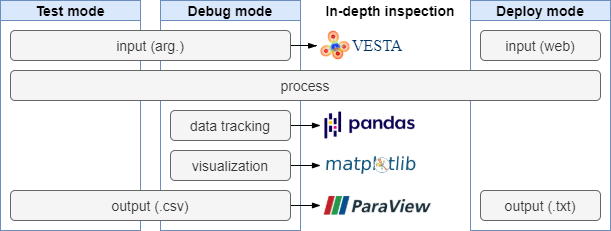

- thumbnail image
Pit Stop: Lightspeed Maintenance
- F1은 트랙을 먼저 도는 차의 순위를 겨루는 레이싱 경기입니다.
- 동체시력과 판단력, 반사신경에서 인간의 한계를 보여주는 레이서도 멋지지만,
- 차가 경기 도중 정해진 위치에 서자마자 사방에서 대기하고 있던 엔지니어들이 달라붙어 고속주행에 마모된 타이어를 순식간에 교체하는 Pit Stop은 그 자체로 한계에 대한 도전입니다.
- 2016년 1.92초 만에 이루어진 타이어 교체는 보면서도 믿기지 않습니다.
- 2년 전 만든 코드에 가끔 수정 요청이 들어옵니다.
- 처음에는 기억을 더듬어 수정했지만 점점 코드를 다시 읽고 해석하는 시간이 길어집니다.
- 배포를 위한 추가 작업이 매번 일어납니다.
- 수정을 마치면 플랫폼에 올리기 위해 파일 입력을 고치고, 그림 출력을 삭제해야 합니다.
- 갑작스런 유지보수가 길어지면 기존 일정이 꼬여버립니다.
- 업무 방식을 근본적으로 개선하고자 했습니다.
- 개발자 선배들이 쌓아놓은 더 좋은 방법이 있을 것 같은데, 공부할 시간이 없었습니다.
- 제 코드가 달리는 트랙은 F1이 아니고, 제 코드도 페라리는 아닙니다.
- 그러나 간혹 들어오는 유지보수는 빠르게 끝내고 싶습니다.
- 급하게 떠올린 아이디어를 적용했습니다. 더 좋은 방법을 알게 되면 좋겠습니다.
As Was: Manual Modification
Problem 1: 두 개의 버전
- 개발버전과 배포버전은 데이터 처리만 동일합니다.
- 개발버전에서 디버깅과 테스트를 실시한 후 배포버전에서 input과 output을 교체했습니다.
- 교체 방식도 초보스러워서, 개발버전의 것을 comment out 처리하고, 디버깅을 하는 동안 comment out 되어 있던 배포버전의 해당 부분을 살리는 식이었습니다.
Problem 2: 유지보수 요청 원인
- 제 경우 대개 새로운 input에 대한 대응력이 부족해서 발생합니다.
- 제 입장에서는 “처음부터 이런 경우도 있다고 이야기를 해주시던가” 싶습니다.
- 그러나 사용자 입장에서는 bug로 인식됩니다.
- Problem 3: 디버깅 방식
- 특정 지점의 데이터를 골라서
print()로 뽑아봅니다. - 특정 데이터를 지정해서 시각화를 합니다.
- 그리고 이 코드들은 deploy할 때 comment out됩니다.
- 특정 지점의 데이터를 골라서
- 마치 동네 카센터 느낌입니다.
- 차가 들어오면 증상을 차주에게 물어보고,
- 차를 들어올리고, 문제 부위 위주로 살피다가,
- 필요한 부품이 없다면 그제서야 주문하는 듯한 모습입니다.
- 몇분 내 pit out이 가능할 리가 없습니다.
Pit Stop for Software Development
(1) Car Tuning
- Pit stop에서 빠른 조치가 되려면 차부터 여기에 맞게 준비가 되어야 합니다.
- 코드의 각 부분을 모드(test, debugging, deploy)에 따라 나누었습니다.
- test: 프로세싱 중심 본연의 기능
- debugging: 디버깅에 활용하는 data tracking, 시각화
- deploy: 웹 플랫폼 탑재시 변경되는 부분

- 집중을 위해 개발 모드를 test와 debugging을 분리했습니다.
test 모드는 플랫폼상 동작을 최대한 모사한 환경입니다.
- input 수십가지를 자동으로 넣는 batch 수행방식이라는 것이 유일한 차이입니다.
- test 모드에서는 최소한의 출력만을 얻어냅니다.
- 이 과정에서 상세 데이터 등이 줄줄이 뽑혀나오면 방해이기 때문입니다.
debugging 모드는 문제의 원인을 찾고 수정시 변화를 찾는 환경입니다.
- 특정 데이터를 tracking하는 코드가 필요하고,
- 이해를 돕기 위한 시각화 코드도 함께 필요합니다.
- 통상적이라면 필요없을 상세한 출력문도 필요합니다.
코드 내부에 각 모드별 기능과 스위치를 탑재합니다.
- 코드 첫 부분에 스위치를 넣어서 모드를 선택하도록 합니다.
- 모드별로 적용될 변수를
class등으로 모아둡니다. - 디버깅하다가 주요 변수가 꼬여버리는 것을 막는 안전장치도 됩니다.

시각화 등 모드별로 작동할 기능을
if문으로 제어합니다.- tracking data가 있다면
class안에 데이터를 담아줍니다. class내에 시각화 종류별 스위치를 탑재하면 통제하기 좋습니다.
- tracking data가 있다면
기존 코드를 별로 건드리지 않습니다
- 기능별 변수와
if문 탑재 정도의 일입니다. - 기존 코드의 주요 부분을 수정하지 않는 단순작업입니다.
- 특히 삭제나 변경이 없다는 점에서 오류를 발생시키지 않습니다.
- 기능별 변수와
(2) Pit Construction
- 이제 코드를 수리할 Pit를 만들 차례입니다.
- 결과를 실시간으로 보며 interactive하게 조작하기 좋아야 합니다.
- 이런 작업은
Jupyter Notebook이 좋습니다. - 저는
Jupyter Lab을 사용했습니다. - 메인 코드를 복사해 넣을 Cell을 가운데 놓고, 위와 아래에 데이터 분석을 위한 코드를 놓습니다.
- 이런 작업은
- data analysis용 코드
- 데이터를 시각화해주는 코드가 여기에 올 수 있습니다.
- 메인 코드에 넣을 수도 있겠지만, 메인 코드의 분량을 최대한 줄여서 본연의 기능에만 집중시키고자 했습니다. 그래야 디버깅이나 기능 추가가 덜 힘드니까요.
- 제 경우 eigenvector와 데이터를 함께 시각화하는 코드를 여기 넣었습니다.
- data analysis 결과
- 메인 코드에서 뱉어주는 최소한의 text output엔 핵심적인 결과가 있습니다.
- debugging 모드라면 몇 가지 시각화가 추가적으로 나올 것입니다.
- 이 결과와 함께 보기 위해서 결과 부분을 메인 코드 하단에 위치시켰습니다.
(3) Pit Operation
Step 1. 유지보수 요청이 들어온 코드를 주피터 노트북에 붙여넣고 실행합니다.
- 메인 코드의 첫 부분에 있는
debugmode = 1로 디버깅 모드를 설정하고, - 셀을 실행해서 기존의 결과물을 얻어냅니다.
- 풍부해진 시각화와 추가 분석을 통해 들여다봄으로써 오류의 원인을 파악합니다.
- 시행착오를 거치며 메인 코드를 수정하고, 버그를 수정합니다.
- 메인 코드의 첫 부분에 있는
Step 2. 원 코드를 버그 수정본으로 교체합니다.
- Ctrl+C/V로 가능합니다.
debugmode = 0으로 세팅해서 테스트 모드로 변경합니다.- 다양한 input을 대상으로 batch test를 진행, 디버깅 성공 여부를 판단합니다.
- 작성하기에 따라 Pit 자체를 디버깅 보고서로 제출할 수도 있습니다.
Step 3. deploymode로 배포합니다.
- 디버깅이 흡족하다면,
deploymode = 1로 변경 후 코드를 배포합니다. - 파일 입출력에 관련된 많은 설정이 자동으로 변경됩니다
- 디버깅이 흡족하다면,